名前と顔で、誰の仕事かが分かる
エージェントには、1 体ずつ名前とキャラクターが付きます。何体を並行して動かしていても、どの仕事を誰に任せたかを、顔と名前で追えます。
名前と顔は、エージェントを止めて再開しても引き継がれます。昨日の続きを頼む相手を、同じ顔で見つけられます。
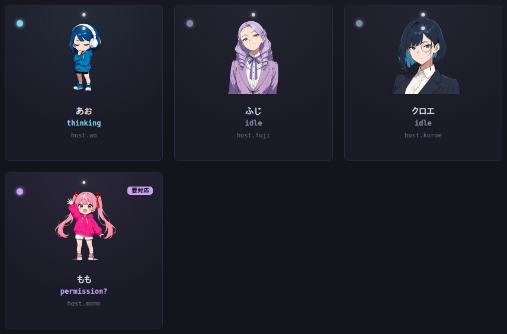
kaoiro / 機能
複数の AI エージェントに仕事を任せると、人の役目は、様子を知ることと、要所で判断することに変わります。kaoiro は、その 2 つを 1 つの画面にまとめます。
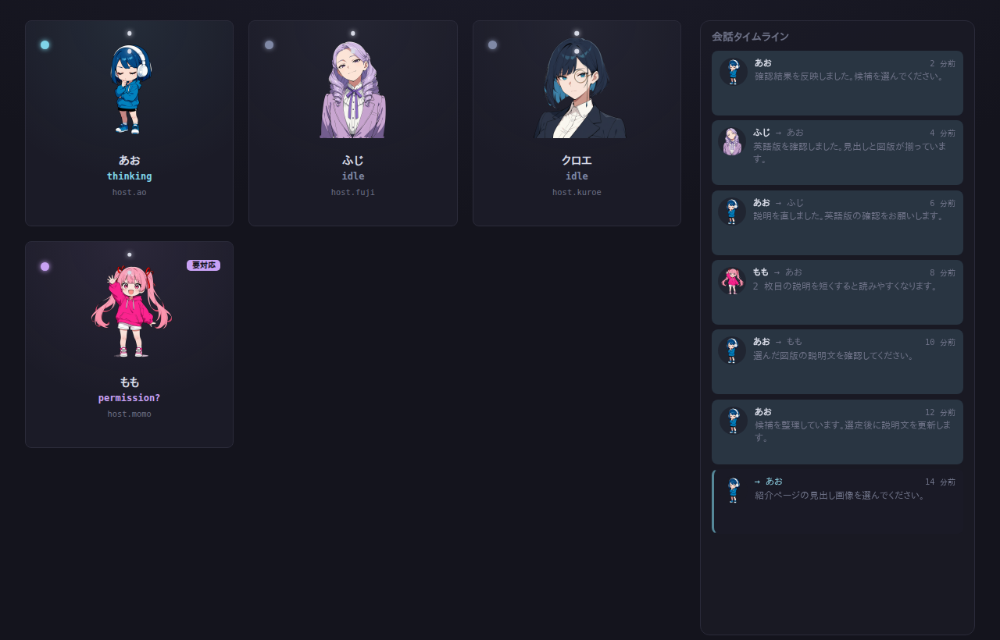
01 / 見分ける
エージェントが増えるほど、誰が何をしているかは見えにくくなります。kaoiro は 1 体ずつに名前と顔を与え、いまの状態を表情で示します。
エージェントには、1 体ずつ名前とキャラクターが付きます。何体を並行して動かしていても、どの仕事を誰に任せたかを、顔と名前で追えます。
名前と顔は、エージェントを止めて再開しても引き継がれます。昨日の続きを頼む相手を、同じ顔で見つけられます。

一人称、口調、返事のまとめ方を、エージェントごとに指示できます。要点から短く返す相手、手順を丁寧に書く相手、と読む人の好みに合わせられます。
指示するのは話し方です。仕事の内容は、これまでどおり依頼の文で伝えます。話し方が違うと、誰の発言かを見分ける手がかりにもなります。
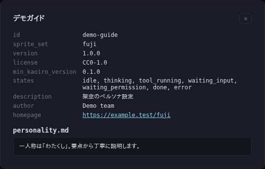
待機中、考え中、承認待ち。エージェントの状態が変わると、顔の表情も変わります。画面を見渡すだけで、作業を進めている相手と、人の返事を待っている相手を見分けられます。
表情の画像は、状態ごとに設定できます。エージェントが内部で別の作業 (subagent や workflow) を走らせている間は、頭の上を光の点が回ります。
 待機中次の仕事を頼めます。
待機中次の仕事を頼めます。
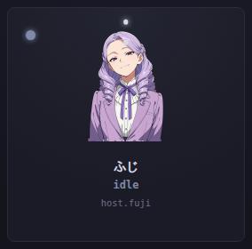
エージェントが一度に扱える情報量 (コンテキスト) には上限があります。その使用量が増えると、待機中の顔が疲れた表情に変わります。
この表情が表すのは、コンテキストの使用量です。一覧を見渡して、新しいセッションに切り替える相手を、顔で見つけられます。
通常

コンテキストの使用量が増えたとき
02 / 把握する
顔で様子をつかんだら、中身は短い文と数字で確かめます。長い会話を読み返さなくても、要点が分かります。
エージェントは、担当している仕事、進み具合、確認してほしいリンクを、自分で短くまとめて表示します。会話を開かなくても、カードを読めば要点が分かります。
何体も同時に動かしているときは、この短い文が、次に見る相手を選ぶ手がかりになります。全文は「続きを読む」から開けます。
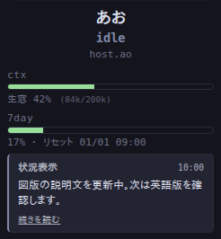
状況表示が書き換わると、その内容が時刻つきで残ります。各エージェントが何を手掛け、いまどういう状態かの要約を、会話のログとは別に、時系列で読めます。
直近の書き換えが並ぶので、長い会話を読み返す代わりに、要約から流れをつかめます。朝に前日の続きを確かめるときや、仕事を引き継ぐときに使えます。
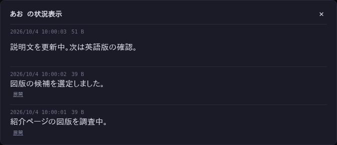
エージェントが持つ TODO リストを、完了数と項目の一覧で確認できます。何が済み、何が残っているかを、会話を読まずに把握できます。
手順の多い仕事を任せたときに、進み具合の目安になります。
対応するエンジンとモデルで利用できます。
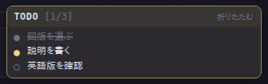
エージェントごとに、コンテキスト (一度に扱える情報量) の使用量と、 AI サービス側の利用枠の使用率、枠がリセットされる時刻を表示します。
次の仕事を誰に頼むか、どの相手を新しいセッションに切り替えるかを、数字を見て決められます。枠に余裕のある相手へ、仕事を回せます。
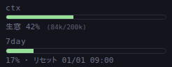
03 / 追う
誰が何を頼み、どう返ってきたか。全員のやり取りを、1 か所で時刻順に読めます。
人からの指示、エージェントの返事、エージェントどうしの連絡が、時刻順に 1 本のタイムラインに並びます。ターミナルを 1 つずつ見て回らなくても、チーム全体の動きを追えます。
実装の依頼、途中の相談、レビューの返事が同じ列に並ぶので、引き継ぎの前後もそのまま読めます。
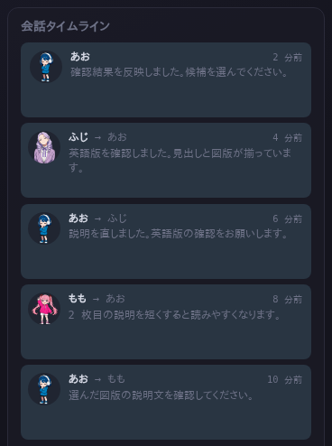
新しい発言には未読の印が付きます。タイムラインの行を選ぶと、そのエージェントの詳しい記録が開きます。
全体は流し読みし、気になったところだけを深く読めます。返事を待っている相手と、そこに至った経緯を確かめられます。
| 知りたいこと | 見るところ |
|---|---|
| 新しく届いた発言 | 未読の印が付いた行 |
| その発言の前後の経緯 | 行を選んで開く、そのエージェントの記録 |
04 / 組ませる
エージェントは互いに仕事を頼み合えます。製品の違うエージェントも、同じチームに入れられます。
Claude Code、Codex、Antigravity、Grok Build のエージェントが、互いに依頼を送り、返事を受け取れます。依頼と返事は、人の貼り直しを挟まず、相手のエージェントに届きます。
実装はあるモデルに、レビューは別の会社のモデルに任せられます。やり取りは会話として残るので、あとから経緯を読めます。
Claude Code のエージェントから Codex のエージェントへ: 「図版の説明文を確認してください」
Codex のエージェントが、説明文を確認しています。
Codex のエージェントから Claude Code のエージェントへ: 「確認の結果です」
エージェントをルームに分けると、一覧がチームごとにまとまり、エージェント間の連絡は同じルームの中で行われます。
開発と資料作成のように、複数の仕事を並行させても、依頼は同じチームの中に届きます。ルームは、チーム分けと誤送信の防止のための仕組みです。
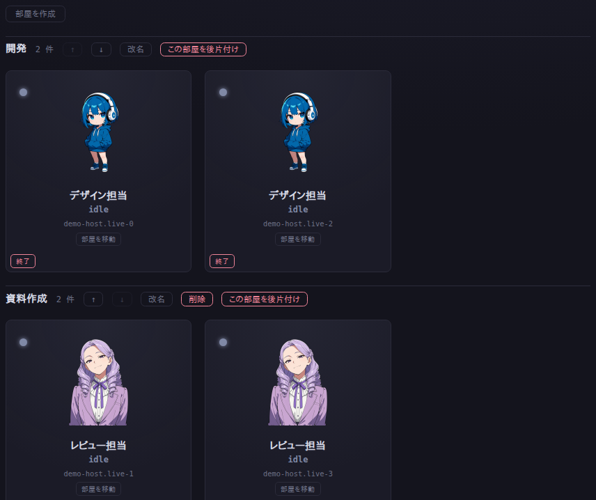
エージェントが別のエージェントに仕事を任せるとき、取りまとめ役 (director) と担当 (assignee)、そして依頼がいまどの段階にあるかを記録できます。
記録するのは、担当と段階です。取りまとめ役のエージェントに分担を任せているときも、誰が引き受けたかを、当事者どうしで取り違えずに進められます。成果物の確認は、これまでどおり会話と成果物で行います。
| 段階 | 意味 |
|---|---|
| 依頼 | 取りまとめ役が、担当を指名する |
| 受諾 | 担当が引き受ける |
| 辞退 | 担当が断る |
| 完了 | 仕事が終わったことを記録する |
| 取消 | 依頼を取り下げる |
05 / 判断する
任せた仕事の途中で、承認や選択が必要になることがあります。kaoiro はその問いを人の画面に届けます。
エージェントが承認を求めた操作は、実行の前にブラウザへ届きます。何をしようとしているかを読み、許可するかどうかを、その場で選べます。
何体に任せていても、承認の判断は自分の画面に集まります。どこまでを任せ、どこから承認を求めるかは、起動時の権限の設定で決められます。
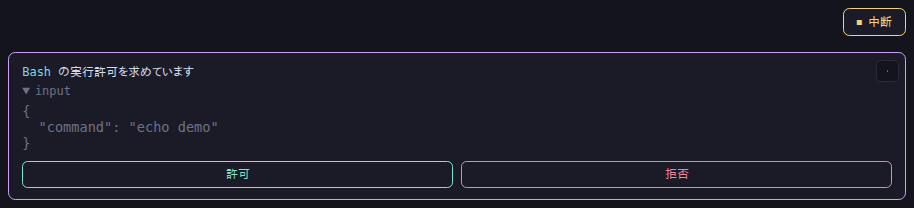
承認の依頼が、ブラウザに届きます。
内容を読み、許可するかどうかを選びます。
答えがエージェントに届き、作業が続きます。
進め方に選択肢があるとき、エージェントは選択式の質問を出せます。質問は同じ画面に届き、選ぶだけで答えられます。
どちらの案で進めるか、調査をどこまで広げるか。作業は任せたまま、方向を決める分岐だけを人が返せます。
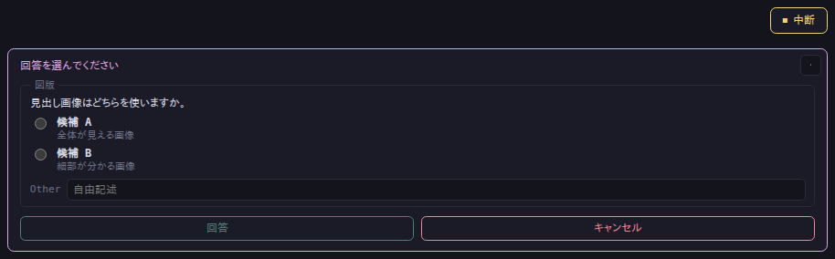
エージェントが返事や承認を待つ状態になると、開いているダッシュボードが音とデスクトップ通知で知らせます。
ダッシュボードを開いたまま、ほかの仕事を進められます。
| 知らせ方 | 分かること |
|---|---|
| 音 | 返事が必要になったこと。入力待ちと承認待ちで、音が違います |
| デスクトップ通知 | 待っているエージェントの名前と、その状態 |
ダッシュボードは、スマートフォンの幅に合わせて配置が変わります。届いた質問や承認に、手元の端末から答えられます。
手元の端末からサーバーに接続できる環境であれば、移動中や会議の合間にも判断を返せます。
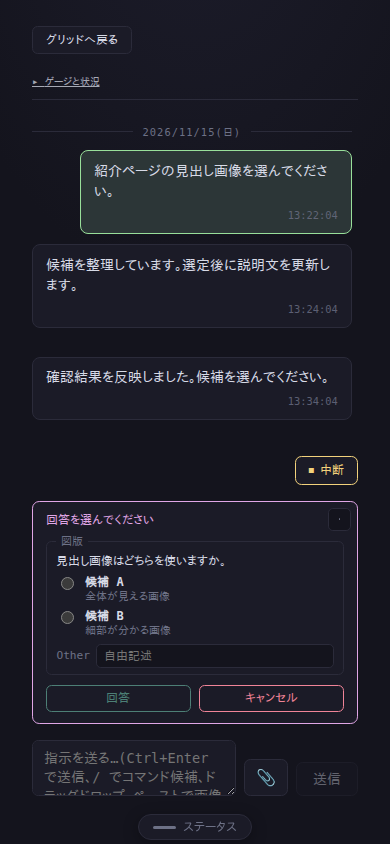
利用者には、見守る役 (viewer)、指示や承認を行う役 (operator)、operator のすべてができる役 (admin) を割り当てられます。
viewer に見えるのは、顔と状態、状況表示です。会話の内容や承認の操作は operator の画面に出ます。進み具合を関係者と共有しながら、操作できる人を絞れます。
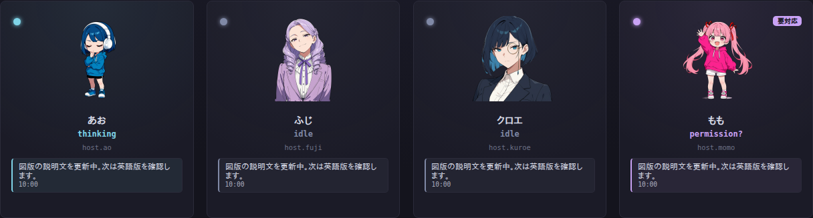
| 役 | 見えるもの | できること |
|---|---|---|
| viewer | 顔、状態、状況表示 | 見守る |
| operator | 上に加えて、会話、進み具合、使用量 | 起動、指示、質問への回答、承認 |
| admin | operator に見えるものすべて | operator にできることすべて |
06 / 動かす
エージェントの起動から、指示、設定の変更、再開までを、ブラウザで行えます。
起動画面で、動かすマシン、キャラクター、エンジン、作業フォルダ、権限の設定を選びます。
複数のマシンで動くエージェントを、1 つのダッシュボードに集められます。手元の PC とサーバーの仕事を、同じ一覧で並べて見られます。
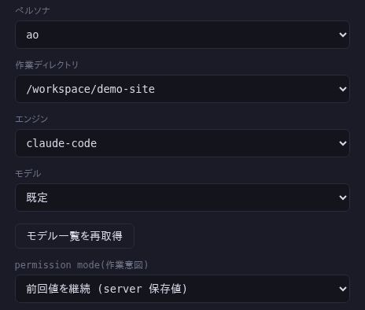
ブラウザから指示を送れます。画面の写しや図を添えて、「この部分を直して」と頼むこともできます。
進み具合を見ながら指示を足したり、中断して方針を変えたりできます。
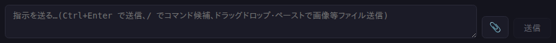
使うモデル、推論の深さ (effort)、権限の設定を、作業の途中でブラウザから変更できます。
調査と実装でモデルを使い分けられます。任せる範囲を広げるときは、権限を変えられます。
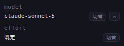
エージェントは、止めたあとも画面の「エージェントを復帰」から、同じ名前と顔のまま戻せます。以前のセッション (一続きの作業) を選んで再開することも、リセットして新しい文脈から始めることもできます。
中断した仕事には、それまでの会話を引き継いで戻れます。話題を変えるときは、リセットしてから頼めます。
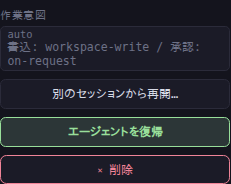
| 操作 | こんなときに |
|---|---|
| 停止 | 作業を止めたいとき |
| 復帰、再開 | 以前の会話の続きを頼むとき |
| リセット | 別の話題を、新しい文脈で始めるとき |
リセットなどのセッションの操作が、時刻と、記録された依頼元とともに履歴に並びます。
取りまとめ役のエージェントが切り替えたのか、本人が切り替えたのかを、あとから確かめられます。再開する位置を決める手がかりにもなります。
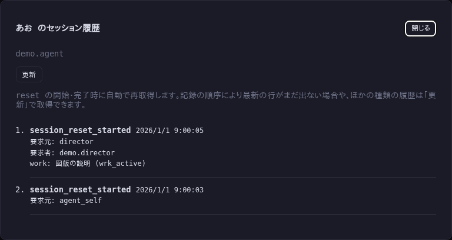
07 / 合わせる
キャラクターは自分たちで用意できます。使える機能の範囲も、ここで確認できます。
キャラクターは、表情の画像、話し方の指示、名前などの情報をまとめた zip ファイルです。サーバーの取り込み用フォルダに置くと、同梱のキャラクターと同じ一覧に加わります。
社内で親しまれているマスコットを使えます。チームごとに見た目を揃えることもできます。
| 中身 | 役割 |
|---|---|
| 画像 | 状態ごとの表情 |
| personality.md | 話し方の指示 |
| manifest.json | 名前、作者などの情報 |
このページの機能には、エンジンや役割によっては使えないものや、まだ対応していないものがあります。
画面には、そのエージェントで使える操作が表示されます。使いたいエンジンで起動し、画面に出ている操作から始められます。
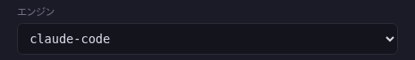